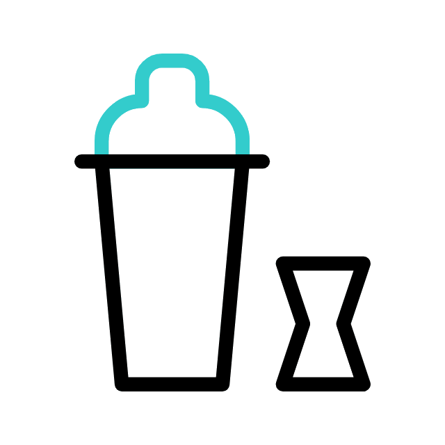

My biography
-
Hello I'm Jeremy Merlin, I am 28 years old, I come from France and
actually living in Liverpool.
-
 I just start a 10 weeks bootcamp at Tech Educators to get back
into web development and start a career in tech.
I just start a 10 weeks bootcamp at Tech Educators to get back
into web development and start a career in tech.
-

I pass a Master of Informatic Engineer that I finish in 2018, but
since I train and become a cocktail bartender for the last 4 years
at Be at One.
-
During my spare time I go to gym, play video games and watch a lot
of series and movies !
-
I used to pilot glider while I was in France but I stop since I'm
living in UK.
My education
- WSET Spirits Level 1 and 2
- WFA Yellow Level
- EBS Graduation
- ISEN: Master in informatic engineer
My job experience
- 2019-Now: Bartender at Be at One
-
2018: 6 months internship at Sopra Steria as Java software
engineer in France and India
- 2015-2016: Sofware engineer at Orange in France, Rennes
My goals
- Being able to travel while working
- Pass my boat license
- Find a job with a amazing project
My Top 10 Travel Destination
- Thailande
- Sulawesi
- Bali
- Dubai
- Taiwan
- Greece
- Mexico
- Amsterdam
- France
- United Kingdom